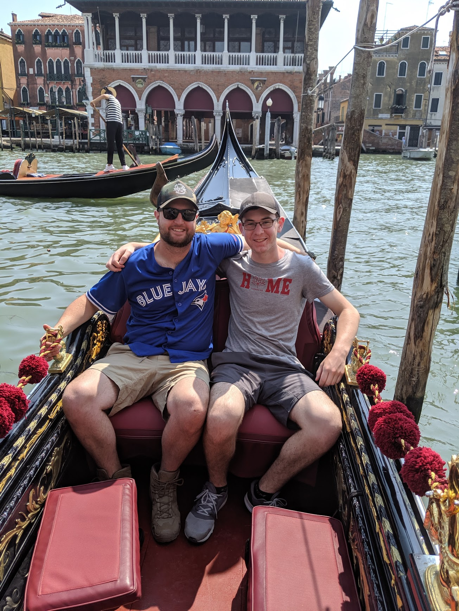
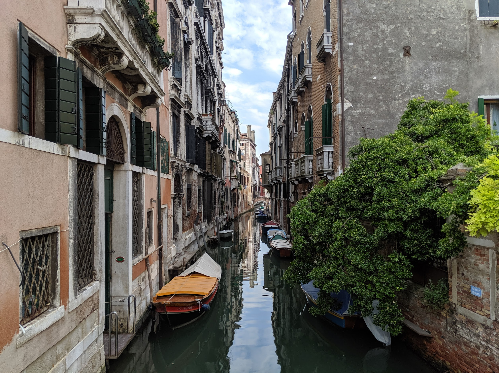
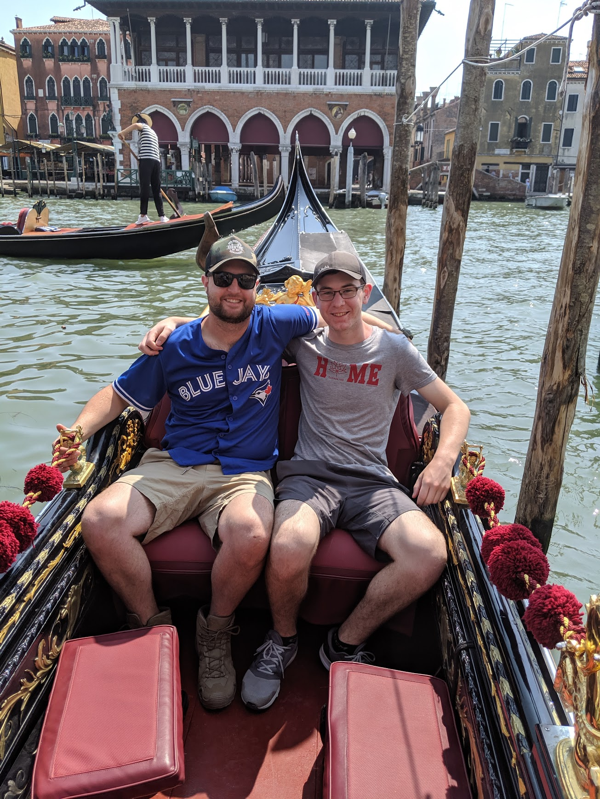
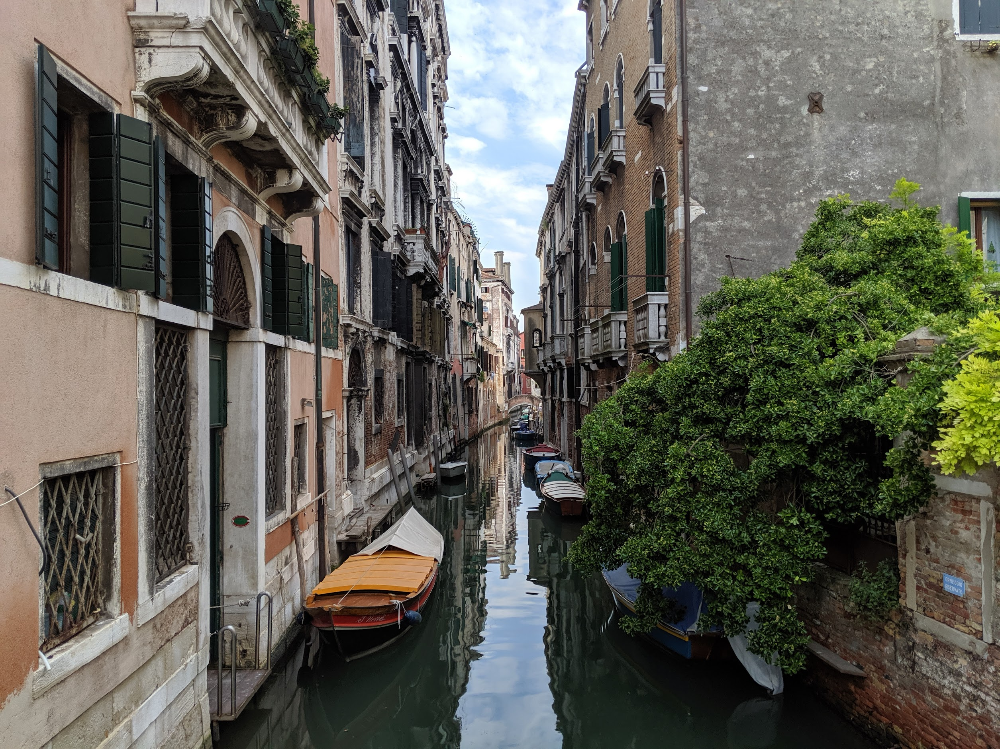

July 9th - July 10th
We arrived in Rome in the evening and spent that night going to see the Colosseum. The next day we woke up early and went out to explore more of the city.
We went to see some of the most famous places like the Colosseum, Trevi Fountain, the Pantheon, and the outside of St. Peter's Basilica. And of course you can't go Italy and not eat pizza on the first day.

July 10th - July 11th
Naples was the second stop on our trip and also a short one. We arrived there at night and we were hungry so we went to pizza place that was supposed to be really good, we ended up waiting in line for close to an hour and when we finally got the pizza, in all honesty, it wasn't that great.
July 11th
The third place we visited was Pompeii, famous for the huge volcanic eruption that wiped out the entire city in 79 AD. This was one of the coolest places we visited because it was incredible to see what remained of the city that was destroyed almost 2000 years ago.
July 11th
Going to Sorrento was a last minute decision for us. It wasn't initially part of the plan but we thought we would check it out and I'm glad we did. Sorrento was the only gimplse we got of southern Italy, home of the Amalfi Coast.
Here we got our first taste of Italian gelato. We didn't spend a lot of time in Sorrento because we needed to get back to Naples to make our train to Venice. If we could though, we would've happily stayed longer.
July 11th - July 12th
Venice was the place that I was most excited to visit. It's one of those places that you hear a lot about and so I was really interested to see what it would really be like.
 


